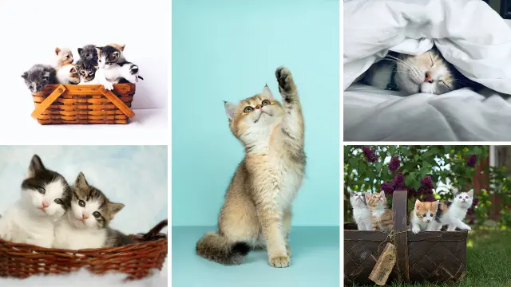
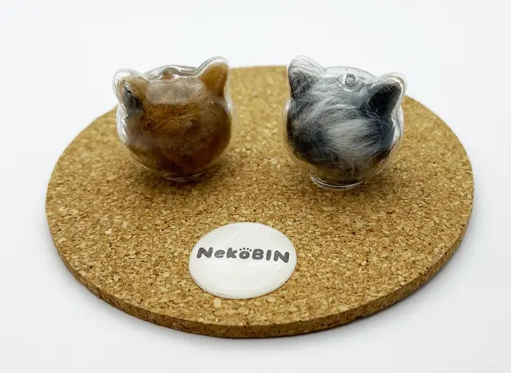
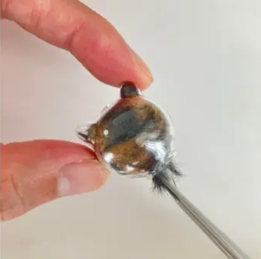
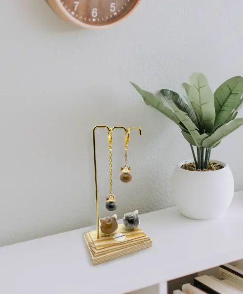

Story

「世界で一番かわいい猫は、どの子ですか？」
きっと、あなたの隣にいるその子ですよね。
かわいい猫モチーフの雑貨はたくさんあるけれど、
「うちの子」そのものには敵いません。
NekoBINは、そんな愛しい我が子の一部である「毛」を
宝石のように大切に保管するボトルです。


「世界で一番かわいい猫は、どの子ですか？」
きっと、あなたの隣にいるその子ですよね。
かわいい猫モチーフの雑貨はたくさんあるけれど、
「うちの子」そのものには敵いません。
NekoBINは、そんな愛しい我が子の一部である「毛」を
宝石のように大切に保管するボトルです。


NekoBINは、大切な方へそのまま手渡せるよう、落ち着いたネイビーの巾着袋に包んでお届けします。価格情報の入っていないメッセージカードも同梱しているため、直送ギフトとしても安心です。
ギフトラッピングの詳細を見るいつも通り、優しくブラッシングしてあげてください。
ブラシに残った毛を、手のひらで丸めます。
想いと一緒に、そっとビンの中に閉じ込めます。

お気に入りの場所に置いて、日常に彩りを。

記念日やふとした瞬間に、あの日の温もりを思い出して。
※カーソルを合わせるとお客様の声が表示されます
「可愛い愛猫といつも一緒にいられる安心感。今までありそうでなかったチャームを作製してくれてありがとう」
「飼い猫の抜けた毛を捨てるのがもったいないと言っている彼女にちょうどいいプレゼントになりそうです。すごく喜ぶと思います」
「今日で急逝した愛猫の四七日になり、表示された広告からご縁を感じ購入させて頂きました。思い出にさせて頂きたいと存じます」
「とても素晴らしい商品を製作していただきありがとうございます。愛猫４匹いるので可愛く作って飾りたいと思います！」
「一つは自分用に一つは友人に！愛猫家にはたまらんにゃんな商品です！楽しみにしています！」
「悩んでましたがやっぱり購入します。ウチは４匹いるので４つでいい感じにレイアウト出来そうです。楽しみに待ってます」
NekoBINの売上の一部は、保護猫・保護犬活動を行う団体へ寄付されます。
私たちは、寄付金の使途や支援実績を透明性を持って報告することを約束します。
あなたの愛するペットとの思い出が、新しい家族を待つあの子たちの未来に繋がります。
私たちは、物理的なプロダクトを超えた「記憶のプラットフォーム」を目指しています。
将来的に、ビンにスマホをかざすと当時の写真や動画が蘇るAR機能や、
最新のAI技術によって愛するペットとの対話や新しい動画を生成する体験を構想しています。
NekoBINは、未来の記憶体験への入り口（ハードウェアキー）となります。